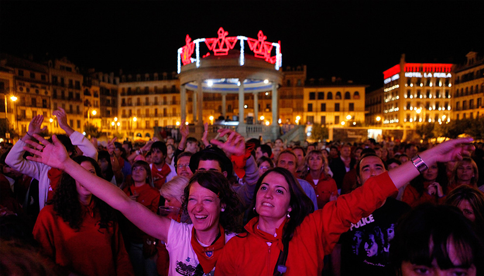

Guía para vivir San Fermín por primera vez
Todo lo esencial y lo que nadie te cuenta si vas por primera vez a San Fermín. Cómo organizarte, qué esperar y cómo vivirlo con criterio, descanso y sentido.

Vivir San Fermín por primera vez puede ser una maravilla y también un pequeño caos. La fiesta es intensa, muy humana y extremadamente cambiante: puede empezar con un encierro a primera hora, seguir con un almuerzo compartido, pasar por una comida larga, dejarte en mitad de una calle llena de peñas o llevarte de noche a los fuegos. Justo por eso, la mínima planificación marca una diferencia enorme.
La mejor primera vez no es la de quien intenta verlo todo, sino la de quien entiende el ritmo de la ciudad, elige bien sus momentos y deja espacio para descansar. San Fermín se disfruta mucho más cuando no se vive como una carrera continua, sino como una secuencia de días y escenas muy distintas entre sí.
Entender el ritmo de la fiesta
San Fermín no es un evento puntual, sino una sucesión de actos, calle, comidas, música, encuentros y noches largas que se encadenan durante nueve días. Lo primero que conviene asumir es que no hay un solo San Fermín: hay el de la mañana, el del mediodía, el de la tarde y el de la noche. Y, además, cada uno tiene su propia lógica.
Por eso, una buena primera visita no consiste en exprimir cada minuto, sino en escoger con cabeza. Si mezclas demasiados planes, acabas agotado y con la sensación de haber ido siempre corriendo. Si reservas huecos para parar, comer bien y dormir algo más, en cambio, la fiesta gana profundidad y también recuerdo.
Puedes empezar por una visión general en qué hacer en San Fermín, y después decidir qué quieres vivir de verdad en primera persona.
Las grandes citas de una primera vez
Si es tu primer San Fermín, hay una serie de momentos que conviene entender bien antes de llegar. No son todos iguales ni se viven igual, y precisamente ahí está buena parte de la gracia.
- Chupinazo: el 6 de julio, a las 12:00, desde el Ayuntamiento, se lanza el cohete que abre oficialmente las fiestas. Es el arranque emocional de San Fermín y uno de los momentos más intensos del año en Pamplona. Si quieres vivirlo desde un buen sitio, puedes ver las opciones en nuestra página del chupinazo.
- Encierro: del 7 al 14 de julio, cada mañana a las 8:00, los toros recorren las calles hasta la plaza. Si no corres, también merece mucho la pena verlo bien elegido. El cohete de salida no se llama chupinazo: se lanza desde Santo Domingo, en la puerta por la que salen los toros, y marca el inicio del encierro. Puedes leer más sobre cómo verlo en nuestra guía sobre cómo ver el encierro de Pamplona.
- Procesión de San Fermín: el 7 de julio, día grande de la fiesta, el santo sale en procesión por el casco viejo. Es un acto serio, bonito y muy local, con jotas espontáneas como uno de sus momentos más reconocibles. Puedes vivirlo desde un buen punto a través de nuestra experiencia de la procesión.
- Gigantes y cabezudos: un clásico de la calle sanferminera, muy ligado al ambiente familiar y a la tradición de Pamplona.
- Corridas de toros: las tardes tienen su propio pulso. Quien quiera entender de verdad la fiesta suele acabar entrando al menos una vez, ya sea por interés taurino o por vivir el ambiente de la plaza.
- Fuegos artificiales: cada noche, el concurso internacional de fuegos se lanza desde la Ciudadela y se disfruta muy bien desde la Vuelta del Castillo y sus jardines.
- Pobre de mí: el 14 de julio por la noche, San Fermín se despide. Aquí el pañuelo se quita del cuello; muchas personas lo llevan antes en la muñeca durante la jornada final.
Si te interesa vivir la fiesta de forma más ordenada, también merece la pena reservar alguno de esos momentos con antelación: un buen balcón para ver el encierro, una visita guiada, una entrada bien elegida o una experiencia más completa cambian mucho la primera impresión. No porque todo tenga que ser programado, sino porque conviene que la espontaneidad no te robe lo importante. Puedes ver qué opciones ofrecemos en nuestra página del encierro desde balcón privado.
Otros momentos que también merecen la pena
Además de los grandes hitos, hay una segunda capa de San Fermín que mucha gente descubre tarde y que, para una primera vez, puede marcar la diferencia entre "he salido por Pamplona" y "he entendido la fiesta".
- Dianas: son las rondas musicales de la mañana. Las hace La Pamplonesa, sin gaiteros, y su sentido es despertar a la ciudad para empezar el día. Son todos los días que hay encierro, del 7 al 14, y es muy típico que desde los balcones caiga agua sobre la calle.
- Salida de las peñas desde la plaza de toros: después de cada corrida, hacia las 21:00 aproximadamente, las peñas salen en fila con sus pancartas y charangas. Es uno de los pasacalles más característicos de San Fermín.
- Conciertos: hay programación musical todos los años y la Plaza del Castillo suele concentrar una parte importante de los conciertos gratuitos y del ambiente de tarde-noche. El horario varía según el programa, pero la franja habitual es la de última tarde y noche.
- Baile de la alpargata: cada mañana, del 7 al 14, después del encierro, el Nuevo Casino Principal suele acoger este momento tan de aquí y tan de mañana sanferminera.
- Deporte rural: siempre conviene mirar el programa, porque es una de esas cosas que pasan desapercibidas para muchos visitantes y, sin embargo, ayudan a entender mejor la cultura festiva navarra.
- Barracas y casetas: según el año, también forman parte del paisaje festivo y completan la oferta para quienes quieren más que calle y copas.
- Corralillos, museos y visitas guiadas: en San Fermín no todo ocurre de noche ni todo es bar. También hay propuestas más tranquilas que permiten ver la fiesta desde otro ángulo.
Si quieres ampliar esta parte, la mejor referencia es nuestra guía de qué hacer en San Fermín, donde está ordenado el conjunto de planes y actos con más detalle.
Vestirse de blanco y rojo
En San Fermín no es obligatorio vestirse de una forma concreta, pero sí existe una norma cultural muy clara: blanco puro, pañuelico rojo y faja roja. No son "detalles" ni complementos más o menos opcionales; son la base del atuendo sanferminero. Quien quiere integrarse de verdad suele vestirse así, porque es bonito, cómodo y forma parte del conjunto visual de la fiesta.
El blanco también importa mucho más de lo que parece. No vale cualquier blanco: el blanco debe ser blanco puro. Un blanco roto, hueso, beige muy claro o gris clarísimo, en la calle y con la multitud alrededor, canta muchísimo y queda raro. Si te vas a vestir para San Fermín, merece la pena hacerlo bien.
¿El 6 de julio por la mañana ya se lleva el pañuelico al cuello?
No. La mañana del 6 el pañuelico no se lleva al cuello; se guarda para ponérselo en el momento del chupinazo, justo después de que estalle el cohete. Ahí es cuando de verdad empieza la fiesta.
Las mujeres pueden llevar pantalón y camiseta, polo o camisa blancos, con pañuelico y faja, pero también falda o vestido siempre que sigan el código blanco y rojo. Lo importante no es la prenda en sí, sino que el conjunto respete el lenguaje visual de la fiesta.
Un jersey o una chaqueta de abrigo también vienen muy bien. Aunque sea julio, Pamplona refresca por la noche, y más de una vez la fiesta termina con frío, lluvia o ambas cosas. En los fuegos, sentado en la hierba o volviendo a casa de madrugada, se agradece mucho más de lo que parece.
Y sí: la ropa casi siempre acaba sucia. Da igual que intentes ir formal; con tanta gente, calle, vino, polvo y movimiento, es normal. Por eso no tiene sentido obsesionarse con ir demasiado impecable.
Dormir, salir y aguantar nueve días
San Fermín se disfruta muchísimo más cuando no intentas vivirlo todo al mismo ritmo. La fiesta dura nueve días, y es imposible sostener durante todo el tiempo el modelo de "bar, alcohol, salir de noche, dormir de día y repetir". Quien viene de fuera suele descubrirlo antes o después; quienes somos de aquí también sabemos que hay que regular, descansar y no querer empalmarlo todo.
Una fórmula muy sensata es reservar uno o dos momentos de corte claro: un día de encierro, un aperitivo al mediodía, una comida larga o una tarde tranquila que te obliguen a irte antes de las seis de la mañana. Quedar a las 11:00 o a las 12:00 para almorzar, o para comer y enlazar luego con toros, es una forma estupenda de no perder el día siguiente entero.
Los mejores San Fermines no son los de quien aguanta más, sino los de quien sabe alternar intensidad y descanso. Si un día lo das todo, otro día conviene bajar un poco el ritmo. Y no pasa nada: es precisamente así como la fiesta se vuelve larga, rica y menos frustrante.
¿Merece la pena dejar un día sin plan?
Sí, pero no del todo. San Fermín gana mucho cuando hay un pequeño margen para improvisar, aunque también conviene organizarse lo suficiente como para no perderte lo importante. Un buen equilibrio es dejar algún hueco libre y, a la vez, reservar con tiempo lo que de verdad quieres vivir: un balcón, una comida buena, una visita guiada o una experiencia más completa.
Comer y beber sin caer en lo peor
En San Fermín se come peor que en Pamplona durante el resto del año. No porque la ciudad deje de saber cocinar, sino porque los bares y restaurantes no dan abasto, suben los precios y baja mucho la calidad en algunos sitios. El resultado es claro: caer en cualquier local sin pensar suele acabar en una cuenta alta y una comida floja.
Por eso, en San Fermín comer bien es casi un pequeño ejercicio de criterio. Hay sitios buenos, pero hay que saber dónde, cuándo y por cuánto. En los restaurantes más sólidos del año, la calidad suele mantenerse mejor, aunque normalmente exige reserva y presupuesto. Y, si uno se aleja diez o quince minutos del centro, también puede comer muy bien y volver luego a la fiesta con otra cabeza.
- Restaurantes que suelen mantener muy buen nivel: La Olla, Europa, Rodero, Alhambra, Enekorri y, según el año y el lugar exacto, alguno de los espacios del Hotel La Perla. Son referencias razonables para quien quiere comer bien en pleno San Fermín.
- Asadores y mesas más tranquilas fuera del centro: si no te importa alejarte unos 10 o 15 minutos, opciones como Olaverri, Zubiondo o Bidea II siguen siendo muy buenas para comer sin la presión del centro festivo.
- Bares de pinchos: en Pamplona cada bar suele tener su especialidad y casi siempre merece la pena buscarla. El huevo del Río o del Museo, el foie del Gaucho, los fritos del Roch y muchos otros clásicos siguen funcionando si vas con expectativas realistas.
El desayuno más reconocible es el chocolate con churros, especialmente el de La Mañueta. No hace falta complicarlo más. Y, si hablamos de almuerzo, el más típico es el del 6 de julio, antes del chupinazo: huevos fritos, chistorra, patatas o propuestas algo más cuidadas, siempre con la cuadrilla. Para muchísimos pamploneses, es uno de los eventos del año.
Ese almuerzico del día 6 tiene mucho sentido porque mucha gente no come luego como un día normal: la fiesta empieza fuerte, la mañana se desordena y, con suerte, acabas cenando cuando ya ha pasado medio día. El resto de las jornadas también se puede almorzar, pero ya no tiene ese peso simbólico. Ahí, más que un rito, se convierte en una forma de comer antes de seguir.
En la corrida de toros aparece otro momento muy especial: la merienda, después del tercer toro. Ahí sí que es casi obligatoria una buena merienda, y además es muy habitual llevar cosas para compartir con los vecinos de grada. Es uno de los gestos más bonitos de la plaza: cada cual trae lo suyo, pero termina compartiéndolo con todos. Hay vino, champán, cerveza, bocadillos, tortillas, gambas, jamón, lomo, pinchos e incluso guisos, ajoarriero o cualquier otra cosa que haya sobrevivido bien al traslado.
También conviene decirlo con claridad: lo más "de aquí" muchas veces es acabar comiendo con algún pamplonica al que le has caído bien y que te invita a su sociedad gastronómica o a su peña. Eso suele ser barato, muy divertido y, dependiendo de a quién le toque cocinar, bastante rico. Normalmente no son cocineros profesionales, pero detrás de muchos fogones de sociedades y peñas hay una mano extraordinaria.
En cuanto a precios, asume que San Fermín encarece todo. Pamplona no es barata ni siquiera fuera de fiestas, y durante estos días la cuenta sube bastante: comer, beber, reservar un balcón, entrar a los toros o cerrar un plan privado se nota mucho en el bolsillo. La mejor forma de no llevarse un susto es asumir desde el principio que una jornada "normal" aquí no cuesta lo mismo que en cualquier otra época del año.
Moverse, quedar y no volverse loco
En San Fermín la ciudad está llena de gente de verdad. Mucha. Y eso tiene ventajas y una consecuencia muy importante: los puntos de encuentro rígidos sirven bastante menos de lo que la gente cree. Quedar en una esquina, en un bar concreto o en "el sitio de siempre" suele ser una receta para perder media noche buscando al resto.
Lo normal es moverse, entrar y salir de bares, cruzarse con gente, perder a unos amigos y encontrar a otros, todo en un radio pequeño pero con muchísima densidad. La fiesta se vive así. O vais juntos desde el principio, o asumís que os iréis encontrando por el camino. Si os perdéis un rato, no pasa nada: en San Fermín eso forma parte del juego.
Por eso también resulta útil dejar acordado un plan más que un punto: "nos vemos a tal hora para comer", "quedamos para el encierro", "después de los fuegos vamos a tal zona". No hace falta militarizar la noche, pero un poco de orden evita demasiada frustración.
Presupuesto realista
Prepárate para gastar más de lo que gastarías en un sábado normal. En San Fermín todo sube: comida, bebida, alojamiento, entradas, balcones y experiencias. Si normalmente una jornada te cuesta una cantidad razonable, aquí conviene pensar en multiplicarla claramente, sobre todo si vas a comer bien, tomar algo por la tarde y salir luego por la noche.
Dicho de otra forma: no es raro que un día que ya parecía completo acabe costando bastante más de lo previsto. Y si además quieres vivir cosas especiales —como un encierro desde un balcón, el chupinazo desde un buen punto o una experiencia más cuidada—, entonces merece todavía más la pena reservar con tiempo y asumir que eso forma parte del propio valor del plan.
La clave no es gastar menos a cualquier precio, sino gastar con sentido. En San Fermín se puede vivir muy bien, pero casi nunca sale barato hacerlo bien sin planificar nada.
Consejos finales para una primera vez de verdad buena
San Fermín tiene una mezcla muy particular de intensidad, orden interno y espontaneidad. Si respetas la fiesta, te adaptas a su ritmo y no intentas convertirla en otra cosa, la experiencia mejora muchísimo. Aquí la buena educación importa, la calle importa y la manera de estar importa tanto como el plan que traigas de casa.
También ayuda mucho acercarse con curiosidad. Hay quien solo busca bares y copas, y hay quien descubre que la mañana, la música, la procesión, las peñas o la comida con locales acaban siendo lo mejor de todo. En San Fermín casi siempre merece la pena probar algo que no habías previsto.
Si quieres una visión más amplia de la fiesta completa, revisa también qué hacer en San Fermín y cómo vivir San Fermín evitando lo turístico. Y, si buscas una experiencia más cuidada o más personal, puedes ver todas las opciones en nuestra sección de experiencias en San Fermín.